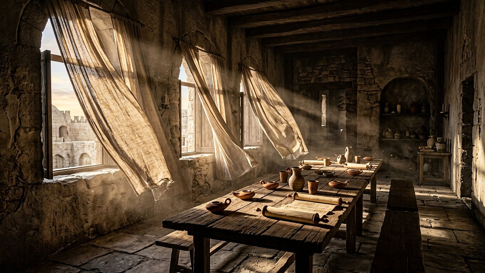
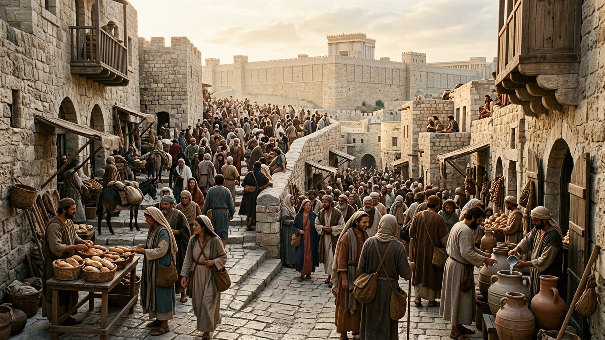
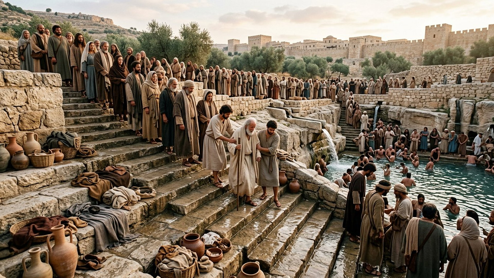

Salle 45 — Joël 2 ; Actes 2 ACCOMPLIE
La Pentecôte de l’an 33 : l’esprit répandu
« Dans les derniers jours, dit Dieu, je répandrai de mon Esprit sur toute chair. » — Actes 2:17, citant Joël 2:28 (d’après Segond 1910)
Reconstitution numérique — « un bruit comme celui d’un vent impétueux » (Actes 2:2) : la chambre haute, sans flammes figurées.
Cinquante jours après, tout commence
La Pentecôte — cinquantième jour après la Pâque — était la fête des prémices, où Jérusalem se remplissait de pèlerins juifs « de toutes les nations qui sont sous le ciel » (Actes 2:5). C’est là, quelques semaines après la mort et la résurrection de Jésus (salle 44), que le récit place l’événement : un vent impétueux dans la maison, des langues « comme des langues de feu » sur les disciples, et chacun des assistants qui les entend parler dans sa propre langue — Mésopotamie, Judée, Cappadoce, Égypte, Rome (Actes 2:1-11). Pierre se lève et cite Joël : « dans les derniers jours, je répandrai de mon Esprit sur toute chair » (Joël 2:28 ; Actes 2:17).
Dans la lecture retenue par ce musée, cette Pentecôte est l’accomplissement initial de Joël et la naissance de la communauté chrétienne : environ trois mille personnes baptisées le jour même (Actes 2:41), puis une prédication qui, de Jérusalem, atteindra « toutes les nations » (Matthieu 24:14, salle 40). La salle la présente comme un événement passé et daté du Ier siècle — et elle refuse de désigner telle manifestation moderne comme « la preuve » que l’esprit agit aujourd’hui de la même manière.
Le récit en cinq temps
Avancez dans la journée, d’une station à l’autre.

Le banc des preuves : une fête, un récit, des débats
DONNÉE HISTORIQUE
Chavouot, la fête des pèlerins (EV-54)
La Pentecôte juive (Chavouot) comptait parmi les trois fêtes de pèlerinage qui amenaient à Jérusalem des foules de tout le bassin méditerranéen — le cadre décrit par les Actes est celui, documenté, des grandes fêtes du Temple au Ier siècle. Le récit des Actes lui-même est transmis par les grands témoins anciens des Évangiles et des Actes, dont le Papyrus 45 (IIIe siècle).
LECTURE PROPHÉTIQUE
Joël accompli — et encore attendu
Pierre applique Joël 2 à l’événement du jour (« c’est ici ce qui a été dit par le prophète Joël », Actes 2:16) : l’esprit est répandu d’abord sur les disciples — les « fils et filles » qui prophétisent — pour équiper l’annonce du Royaume. Le musée y voit le premier accomplissement, sans clore la parole de Joël, que la suite du livre des Actes déploie vers les Samaritains puis vers les nations.
DÉBATTU
Que s’est-il passé, au juste ?
Les historiens discutent la nature des « langues » (langues humaines réelles ou extase verbale), la part de rédaction dans le discours de Pierre et l’ampleur du chiffre des baptisés. Les mouvements pentecôtistes modernes y voient le modèle d’une expérience à revivre, ce que d’autres traditions contestent. La salle expose l’événement selon le texte, et le débat selon les spécialistes.
Quatre clés pour bien situer l’événement
1. Un accomplissement daté, pas un rituel à répéter
Le récit ancre l’événement : Jérusalem, la fête, le matin, « la troisième heure du jour » (Actes 2:15). Le musée le classe ACCOMPLIE comme on classe la chute de Babylone en 539 : un moment situé, dont les effets — une communauté mondiale — se vérifient dans l’histoire.
2. Des langues pour être compris, pas pour étonner
Le miracle décrit est communicationnel : chacun entend « dans son propre langage » les merveilles de Dieu (2:11). Il sert l’annonce du Royaume à toutes les nations (salle 40) — le contraire d’une performance réservée aux initiés.
3. Ni ivresse ni désordre
À l’accusation « ils sont pleins de vin doux », Pierre répond par l’heure et par l’Écriture (2:13-16). Le récit insiste sur l’intelligibilité du discours qui suit : l’esprit, ici, produit de la parole claire et trois mille décisions réfléchies.
4. La rançon trouve ses premiers bénéficiaires organisés
Cinquante jours après le prix payé (salle 44), le pardon prêché en son nom rassemble une communauté concrète : enseignement, repas partagés, entraide (2:42-47). La Pentecôte est le joint entre la théologie de la salle 44 et l’histoire des salles suivantes.
Prescience n’est pas fatalité — « que ferons-nous ? »
La foule n’est pas emportée par une transe collective : elle écoute un argument, puis demande « hommes frères, que ferons-nous ? » (Actes 2:37). La réponse laisse le choix intact — se repentir, se faire baptiser — et trois mille personnes le font librement, une à une, dans les bassins de la ville.

Salle 44 : la rançon, cinquante jours plus tôt · Salle 40 : le Royaume annoncé à toutes les nations · Salle 25 : les bains des pèlerins
Écouter la salle
Transcription de la narration
Bienvenue dans cette salle du musée. Vous allez découvrir une grande chambre aux rideaux gonflés par un vent soudain, des rues anciennes remplies de voyageurs en habits de toutes les nations, puis de larges marches de Pierre descendant vers des bassins d’eau claire. Bonne visite. La visite avance en cinq étapes courtes. Prenez le temps d’observer chaque image et de lire les panneaux : ils présentent un très vieux poème, une fête dans une ville de collines, et la naissance d’une communauté qui allait parler toutes les langues.